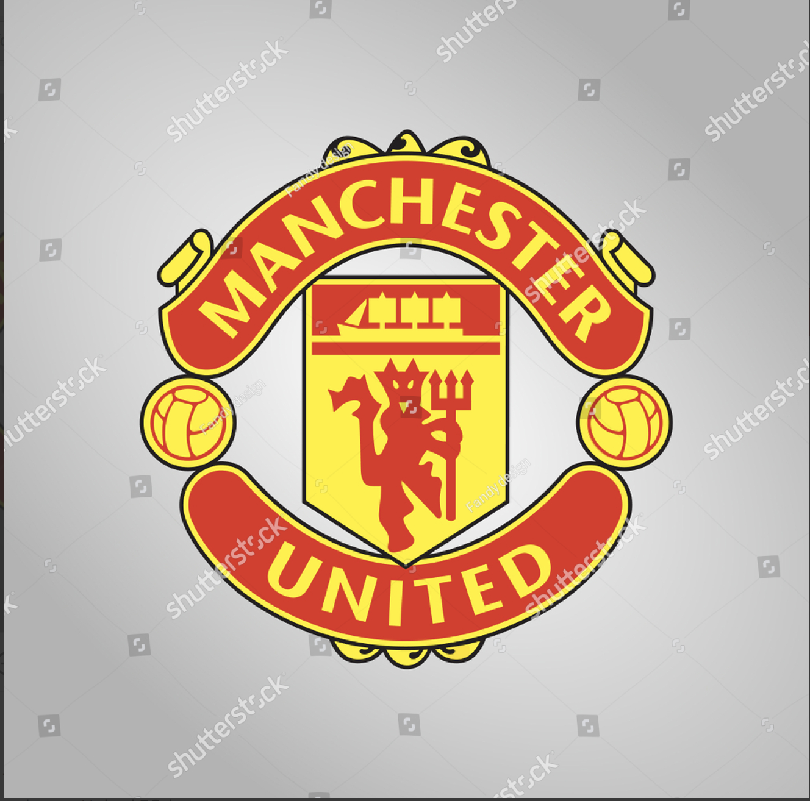

Soccer ⚽
Zlatan's Clubs
Zlatan has played for various clubs in his career. Following is the information about his previous Clubs
Juventus (2005)

After playing for Sweden's clubs, his major breakthrough was when he got sold to Juventus club of Italy.
Inter Milan (2006)

in 2006, he got transferred from Juventus to AC Milan.
Barcelona (2009)

After spending 3 years with AC Milan, he was traded to FC Barcelona
Paris Saint-Germain (2012)

Zlatan was bought by the most popular team in France, Paris SG
Manchester United (2016)
Finally, he was bought by Manchester United.